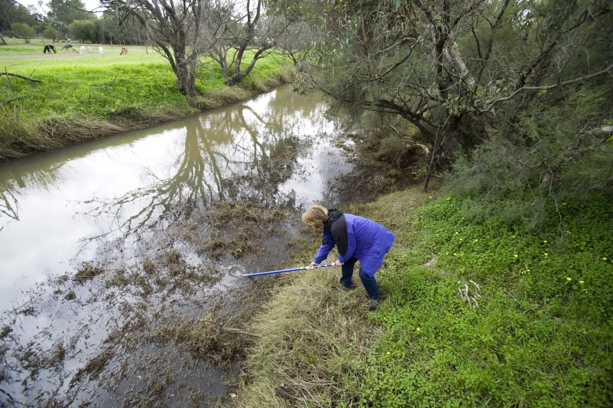
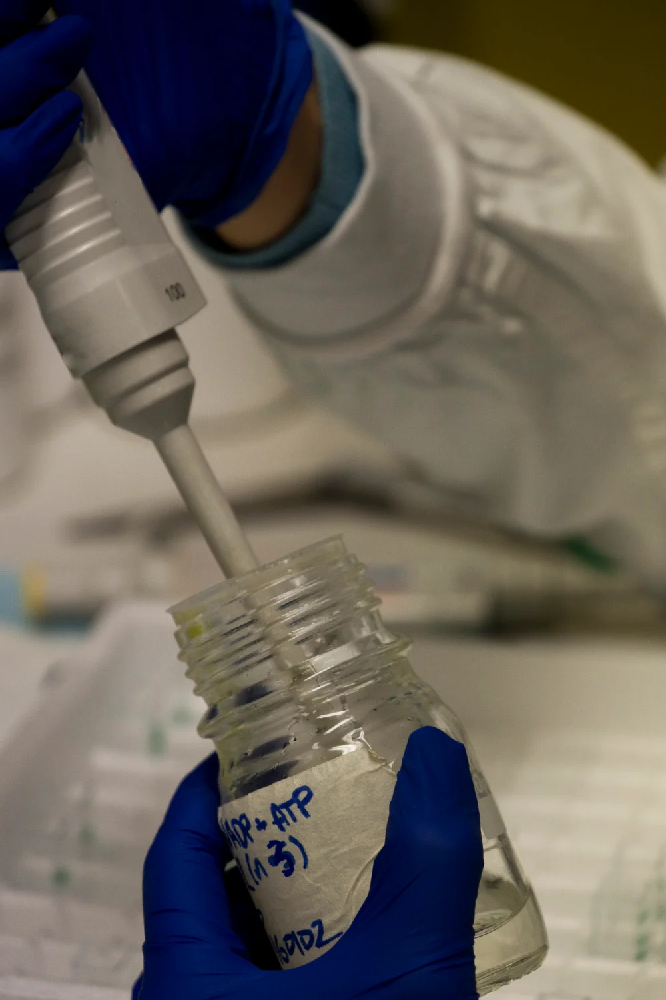

Full article · LinkedIn
Why ‘Backed by Science’ Is One of the Weakest Claims a Company Can Make
A research-led explanation of why scientific claims need a measured outcome, comparison, setting, and boundary—not just a study or a reassuring phrase.
Audio version available · 9 min 53 sec
Listen to this article
Press play and read along. Your player stays with you as you scroll.
Audio could not load. Open the recording directly.

A real study can support a much smaller promise than the one on the website.
In high school, I built a small constructed-wetland model to test whether water hyacinth could reduce nutrients in a Microcystis algal bloom system. During the remediation stage, phosphate concentrations declined by an average of about 2.9 parts per million per day in the hyacinth groups, compared with 1.9 in the control.
That was a result worth reporting.
It did not mean I had found a safe way to clean up a lake. The work took place in controlled glass vessels. Water-clarity measurements complicated the story. And water hyacinth can create ecological problems of its own when introduced into natural waters.
I could have flattened the entire experiment into three words:
“Backed by science.”
Those words would have concealed almost everything that made the result meaningful. You would not know what I measured, what I compared it with, or how far the conclusion could travel.
That is the problem with the phrase on a company website. It sounds like the hard questions have already been answered. It leaves the reader to discover which questions were asked.
Backed by science for what?
A plausible mechanism. A laboratory experiment. A pilot installation. Years of performance in the conditions a customer actually faces.
All can involve serious science. They offer different kinds of support.
“Backed by science” does not tell you which one a company has. It does not name the product tested, the outcome measured, or the conditions under which the result held. It borrows the authority of scientific work while leaving its substance outside the sentence.
For a buyer, that missing information is the difference between an interesting possibility and a useful reason to choose a product.
Imagine a material that captures a contaminant in a carefully prepared laboratory solution. That finding might justify more development. A claim that the finished system reliably treats variable industrial wastewater needs evidence about that system, those water conditions, and its operation over time. The mechanism alone cannot fill those gaps.
The FTC’s guidance for health-product advertisers illustrates the same problem: valid studies may still fail to support the particular product or benefit being advertised. Formulation, dose, tested population, and measured outcomes can change what the evidence means.
Health products have their own testing standards. An environmental technology does not need to be evaluated like a medicine. The useful question is broader: Does the evidence support the promise a reader is being asked to believe?
A serious answer requires more than the existence of a paper.
A good study can still answer the wrong question

The easiest mistake is to let a measured outcome quietly become a larger one.
Lower phosphate concentrations can be relevant to bloom management. They do not, by themselves, establish that a treatment eliminates cyanobacteria, removes their toxins, or produces water safe to drink. Those are additional claims. They need evidence that answers additional questions.
This distinction matters even when the original experiment is carefully conducted. A measurement can be accurate while the sentence built around it is too broad.
Consider PFAS filtration, a subject I discussed in my recent review of environmental-technology websites. The EPA describes activated-carbon adsorption as contaminants accumulating at the interface between water and a solid material. Removing PFAS from water can be valuable treatment. That result alone does not demonstrate destruction of the molecules.
The analytical method has boundaries too. EPA Method 1633A targets 40 specified PFAS in defined environmental sample types. A result for those compounds cannot establish the absence of every PFAS.
Neither distinction discredits the treatment or the test. Both tell us what the evidence can support.
The same discipline applies to a customer survey, a software benchmark, or an energy-saving demonstration. Satisfaction is a different outcome from measured performance. A benchmark describes the task and conditions used. A percentage improvement requires a baseline.
When these distinctions disappear, the reader has to supply assumptions. The company may have intended a narrow, defensible claim. Its copy may invite a much larger one.
That is a writing problem a better adjective will not solve.
A citation cannot do the explaining for you

A journal link gives readers somewhere to check a claim. It cannot establish the relationship between the paper and the promise above it.
Was the current product tested? Was the comparison meaningful? Did the researchers measure the outcome customers care about? Did the result persist for long enough to support the advertised use?
These questions are especially important when the homepage gives only the most favorable finding. In my own experiment, the phosphate comparison was encouraging, but the water-clarity measurements did not offer a simple confirmation of bloom reduction. Reporting one result as “proven bloom control” would have changed the question my data answered.
The National Academies’ report on reproducibility and replicability makes a related point: scientific findings should be considered in the context of the larger body of evidence. One successful replication does not guarantee a conclusion is correct; one failed replication does not automatically overturn it.
That makes evidence evaluation more demanding than counting citations. Study design, relevance, uncertainty, and the relationship among findings matter. Ten papers about a mechanism do not automatically demonstrate the performance of one commercial installation.
Peer review is valuable scrutiny. It cannot extend a study to an untested setting or make its measured outcome equivalent to a different one. The FTC’s health-product guidance likewise cautions that publication alone does not prove the advertised benefit.
Early evidence still has value. A promising laboratory result can justify a pilot. A pilot can reveal what should be tested next. There is room for uncertainty in a credible product story, provided the reader can see it.
“Promising in a controlled trial” gives that story a location. “Backed by science” often removes it.
Give the evidence a sentence of its own
Here is a more useful description of my experiment:
In a controlled constructed-wetland model, phosphate concentrations declined by an average of about 2.9 ppm per day with water hyacinth, compared with 1.9 ppm per day in Microcystis-only controls. The study did not test lake-scale remediation or safe field deployment.
That sentence has less reach than a slogan. It gives the reader more to work with: an outcome, a comparison, a setting, and a boundary.
Technical teams can apply the same approach by answering five questions before writing the claim:
- What exactly was tested: a material, prototype, or finished product?
- What changed: which measured outcome, and by how much?
- Compared with what: which control, baseline, or alternative?
- Under which conditions: what setting, scale, duration, and operating limits?
- What remains uncertain: which conclusion has the testing not established?
The answers do not all belong in a headline. The detail that materially changes its meaning belongs close enough for a reader to notice it. The full methods and evidence can sit behind a clear link.
The FTC’s explanation of its Green Guides cautions against broad, unqualified environmental-benefit claims and explains the role of qualifications. It does not make the phrase “backed by science” automatically unlawful. It reinforces why the scope of a claim matters.
In practice, I would start with the strongest statement the evidence supports, then check whether the surrounding copy makes it sound larger. A careful qualification in a technical PDF cannot help a reader who has already been given the wrong expectation on the homepage.
Specificity can also give a prospective customer a better next step. They can ask whether their water chemistry, installation, or operating conditions match the tested use. They can identify the remaining evidence they need. The conversation moves beyond a general request to trust the brand.
A narrower promise can carry more useful information.
“Backed by science” may introduce a serious research program. It may point to one early experiment. Used alone, it gives the reader very little basis for telling the difference.
If a company has done careful work, its public explanation should make that work easier to understand. Show the result. Name the comparison. Keep the important limitations visible.
The science deserves a sentence more specific than a slogan.
If your team has strong evidence and needs a clearer way to explain it, that is the work I do at PaulWrites.net: turning environmental research and technical material into writing people can understand, question, and use. Let's chat.
About this project
See the assignment, process, and Paul’s contribution.
Paul developed the argument, researched the supporting sources, drew on his own experimental work, and wrote and published the article independently. The reading page preserves the October 5, 2026 LinkedIn edition, including images, captions, emphasis, quotations and source links.
Related work
Continue through the subject.

I Reviewed 20 Environmental-Tech Websites. Here’s What They Got Wrong About Their Science.
A review of 20 environmental technology websites examining how PFAS treatment, water reuse, carbon accounting, and monitoring claims communicate their evidence and limits.

Rhizofiltration of an Induced Microcystis Bloom Using Water Hyacinth
A constructed-wetland experiment testing whether water hyacinth could remove bloom-supporting nutrients from an induced Microcystis system.

The EU’s Greenwashing Crackdown Has a Second Target You Haven't Heard Of
An examination of EU greenwashing rules and their less obvious focus on durability, repairability, software support, and the practical barriers to keeping products in use.